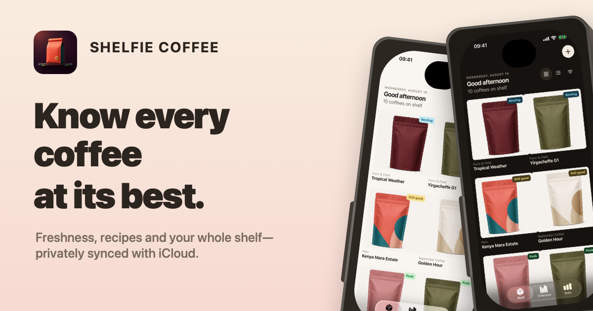

Freshness, automatic
Roast dates become simple guidance, so you always know what to open next.
Track freshness, scan coffee bags, remember great brews, and see your taste take shape.
No account. No tracking. Private iCloud sync.

Roast dates become simple guidance, so you always know what to open next.
On-device recognition reads the package and fills the details without an upload service.
Save dose, water, extraction time, rating, and the details behind a memorable cup.